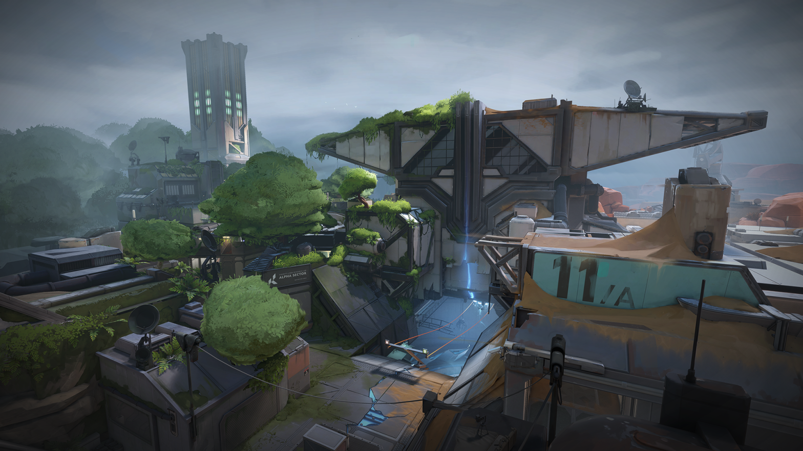
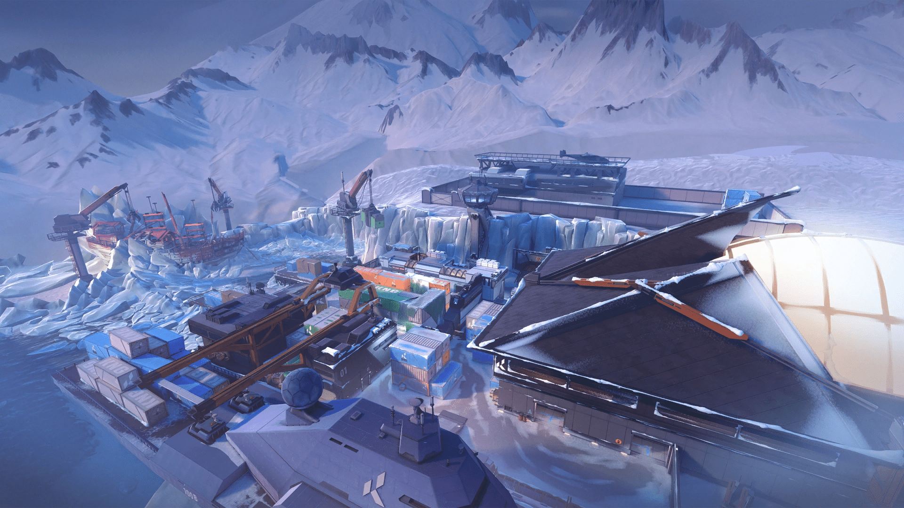

MAPAS
 Ascent is one of the nine playable maps in VALORANT. This map is in the sky above Venice, where chunks of the city rose after the events of the DUELISTS cinematic. |
 "City of Flowers" is the name of the city Lotus is set in, but also the name of a cinematic released when Lotus was launched. |
|---|---|
 Breeze is one of the nine maps in VALORANT. Currently, it is one of two maps that are not available in competitive and unrated. |
 This article is about the Lore of the Map, Fracture. For an archive of all the Emails, Announcements, Terminals, and other such elements that were found at Fracture, see Kingdom Archives. |
 Pearl is the one of the nine playable maps in VALORANT. It is set in an underwater Geodome in Lisbon, Portugal, and is the first map to be set on Ω-Earth. |
 Bind is one of the nine maps in VALORANT. A map located in arid environment of Morocco, it is one of the 4 maps released with the initial launch of VALORANT. |
|  Icebox is one of the nine maps in VALORANT. Currently, it is one of seven in rotation for competitive and unrated. |
 Haven is one of the nine maps in VALORANT. Currently, it is one of seven in rotation for competitive and unrated. |
 Split is one of the nine maps in VALORANT. Currently, it is one of seven in rotation for competitive and unrated. The map shows a city with a traditional side and a modern, business side to it, and it is 'split' between the two. |
 The Range, also known as "The Practice Range", is a playable map where the tutorial for the game is set. |